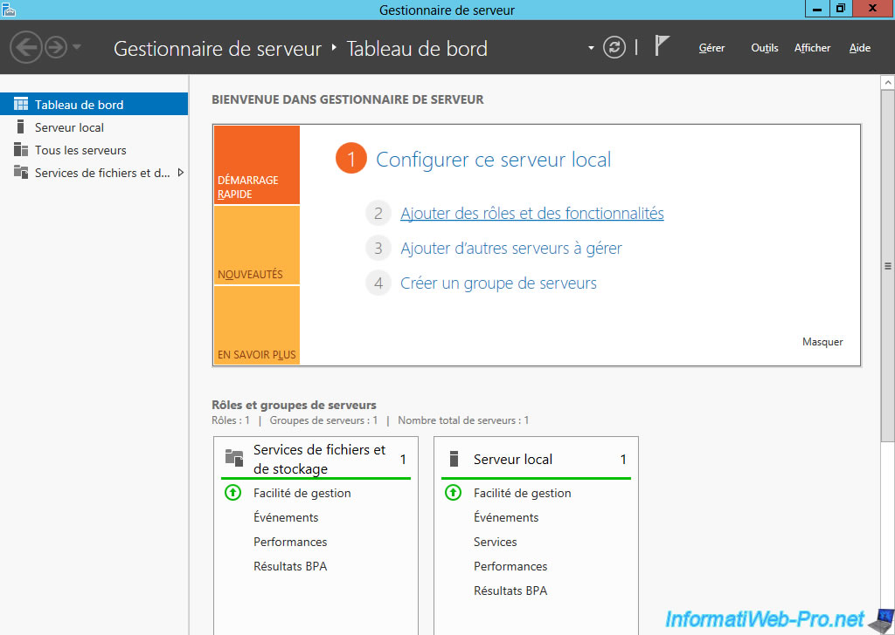

Le but de ce projet était créer un serveur ActiveDirectory sur une machine virtuelle afin de gerer les utilisateurs et leurs droits sur l'ordinateur.
J'ai pu aquérir des compétences comme :
- Recenser et exploiter des ressources numériques,
- Collecter, suivre et orienté des demandes,
- ou encore, Traiter des demandes concernant les services réseau et système
Interface du serveur ActiveDirectory :
